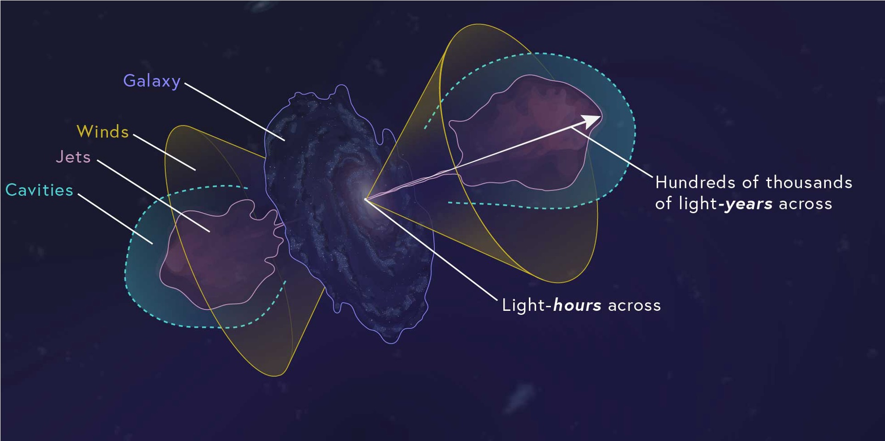
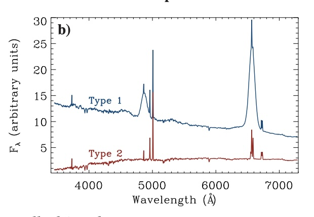

Swetha Sankar
Swetha Sankar
Swetha Sankar
Swetha Sankar
Johns Hopkins University | Space Telescope Science Institute
Download CVSupermassive black holes sit at the centers of massive galaxies and can profoundly alter the gas from which galaxies grow. Yet the central question of black hole–galaxy coevolution is no longer simply whether black holes influence their hosts. It is when that influence begins, how rapidly it develops, and under what conditions it changes the course of a galaxy.
The difficulty is that the most important phases of black hole growth and feedback are often the hardest to observe. They can be brief, heavily obscured by dust, or caught between familiar observational states. By the time we identify a mature quasar, a large-scale outflow, or a powerful radio galaxy, we may already be seeing the outcome rather than the physical transition that produced it.

Credit: Leah Hustak / STScI

My research is motivated by a simple problem: we often study active galactic nuclei as static snapshots, even though the physics of black hole growth and feedback unfolds in time.
I study obscured and reddened quasars, changing-state AGN undergoing rapid Type 1–Type 2 spectral transitions, and gas-rich galaxies hosting compact radio jets. These systems offer rare opportunities to catch supermassive black holes while they are rapidly feeding, changing their accretion structure or obscuration, launching winds and jets, and beginning to transfer energy into the surrounding galaxy.
By combining infrared spectroscopy, multiwavelength imaging, radio observations, and time-domain surveys, I trace the sequence connecting black hole fueling, obscuration, accretion-state changes, shocks, outflows, molecular gas, and the response of the host galaxy. Rather than treating feeding and feedback as separate processes, my work asks how they overlap, compete, and evolve during the short-lived phases when galaxies may be most susceptible to change.
The questions driving my work are:
Ultimately, my goal is to move beyond a static picture of black hole–galaxy coevolution and build a time-resolved one: identifying the transitions that connect black hole growth to galaxy transformation, determining how long those phases last, and establishing when black hole activity truly changes its surroundings.